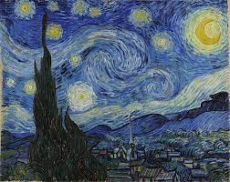
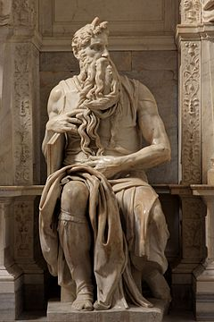
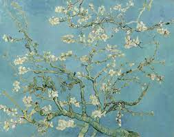
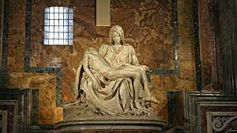

Cart
About
Projects
Services
+
medium
-
Select Text colour
White
Red
Blue
Pink
light blue
Maroon
Purple
Select Background colour
Black
White
Dark Red
Olive
Grey
Dark Purple
Light Pink
Here let's take a look at what are the famous works done by David, Michelangelo and van Gogh
Image Gallery
1 / 5

2 / 5

3 / 5

4 / 5
5 / 5

❮
❯

![The Starry Night is an oil on canvas painting by Dutch Post-Impressionist painter Vincent van Gogh. Painted in June 1889, it depicts the view from the east-facing window of his asylum room at Saint-Rémy-de-Provence, just before sunrise, with the addition of an imaginary village.
It has been in the permanent collection of the Museum of Modern Art in New York City since 1941, acquired through the Lillie P. Bliss Bequest. Widely regarded as Van Gogh's magnum opus, The Starry Night is one of the most recognized paintings in Western ar](images/night.jpeg)